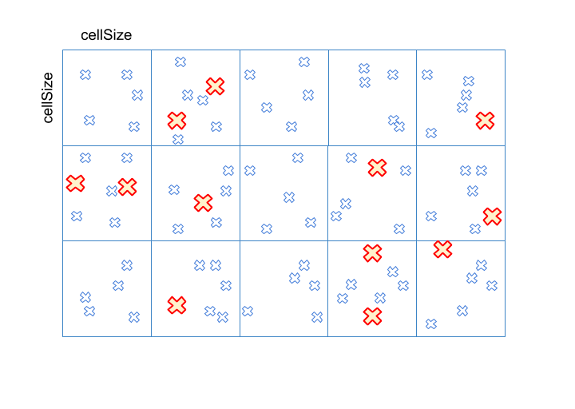

This tutorial shows how dwFeature2DDetector and dwFeature2DTracker modules are typically used. Note that error handling is left out for clarity.
Initialize feature history array on both CPU and GPU
@ DW_MEMORY_TYPE_CPU
pageable CPU memory
@ DW_MEMORY_TYPE_CUDA
CUDA memory.
DW_API_PUBLIC dwStatus dwFeatureHistoryArray_create(dwFeatureHistoryArray *featureHistoryArray, const uint32_t maxFeatureCount, const uint32_t maxHistoryCapacity, const dwMemoryType memoryType, dwContextHandle_t context)
Creates and initializes a feature history array.
Initialize feature array on GPU for detector
DW_API_PUBLIC dwStatus dwFeatureArray_create(dwFeatureArray *featureArray, const uint32_t maxFeatureCount, const dwMemoryType memoryType, dwContextHandle_t context)
Creates and initializes a feature array.
Initialize feature detector and tracker parameters with default values
DW_API_PUBLIC dwStatus dwFeature2DTracker_initDefaultParams(dwFeature2DTrackerConfig *params)
Initializes dwFeature2DTracker parameters with default values.
Holds configuration parameters for a feature tracker.
DW_API_PUBLIC dwStatus dwFeature2DDetector_initDefaultParams(dwFeature2DDetectorConfig *params)
Initializes dwFeature2DDetector parameters with default values.
Holds configuration parameters for a feature detector.
Modify parameters according to input image and detection requirements, create detector. Detector will first split the given WxH input image into cellSize x cellSize cells, detect Harris corner whose score is higher than scoreThreshold. Features with score >= scoreThreshold will be considered as high frequency details (red crosses). Detail features will be added to candidate list first, detector will then sort the rest features with score between (scoreThreshold, detailThreshold) from highest to lowest by cell, select the first numEvenDistributionPerCell features in each cell (blue crosses, here numEvenDistributionPerCell = 5, so there're 5 second-highest-score features in each cell). These second-highest-score features are distributed evenly across cells. 
Setting scoreThreshold >= detailThreshold means all features are high frequency details, numEvenDistributionPerCell will be invalid. Setting numEvenDistributionPerCell = 0 turns off the even distribution component. Both of the 2 cases will make detected features be clustered in high frequency regions, i.e. only red crosses will be left in above illustration. contextHandle is assumed to be previously initialized dwContextHandle_t.
detectorConfig.
imageWidth = inputImageProps.width;
uint32_t imageHeight
Height of the images that the Detector runs on.
uint32_t maxFeatureCount
Upper bound on number of features handled.
uint32_t cellSize
Cell size in pixel to split the image into cells.
uint32_t imageWidth
Width of the images that the Detector runs on.
uint32_t numEvenDistributionPerCell
for DW_FEATURE2D_DETECTOR_TYPE_STD only Number of features to be appended after high frequency points...
float32_t detailThreshold
for DW_FEATURE2D_DETECTOR_TYPE_STD only features in the cell that have scores higher than this value ...
float32_t scoreThreshold
Threshold to filter out low latency points.
DW_API_PUBLIC dwStatus dwFeature2DDetector_initialize(dwFeature2DDetectorHandle_t *obj, const dwFeature2DDetectorConfig *config, cudaStream_t cudaStream, dwContextHandle_t context)
Creates and initializes a feature Detector.
Modify parameters according to input image and tracking requirements, create tracker. trackerConfig.isInputCompact must be read from detector. contextHandle is assumed to be previously initialized dwContextHandle_t.
trackerConfig.iterationsLK = 10;
dwFeature2DDetectorType detectorType
Type of detector that connects to the tracker, should be the same value as dwFeature2DDetectorConfig:...
uint32_t windowSizeLK
Window size used in the KLT tracker.
uint32_t imageHeight
Height of the images that the tracker runs on.
uint32_t imageWidth
Width of the images that the tracker runs on.
DW_API_PUBLIC dwStatus dwFeature2DTracker_initialize(dwFeature2DTrackerHandle_t *obj, const dwFeature2DTrackerConfig *config, cudaStream_t cudaStream, dwContextHandle_t context)
Creates and initializes a feature tracker.
dwFeature2DDetectorType type
Detecting algorithm defined by dwFeature2DDetectorType
Create 2 image pyramids as detection/tracking input: one is current, one is previous, the 2 pyramids work as a double buffer (or ping-pong buffer). They swap each other after each detection/tracking cycle. So new frame will always be read into pyrmaidCurrent and the previous frame will be stored to pyramidPrevious.
dwPyramid_create only creates pyramid image and allocates memory, pyramid will be filled in dwImageFilter_computePyramid. Top level (level 0) in pyramid is always the same size as original input image.
inputImageProps.width, inputImageProps.height are the same in tracker/detector initialization
imagePxlType should be got from dwImage_getPixelType(inputImageProps.format).
contextHandle is assumed to be previously initialized dwContextHandle_t.
dwPyramid_create(&pyramidPrevious, levelCount,
inputImageProps.width, inputImageProps.height, pxlType, context);
dwPyramid_create(&pyramidCurrent, levelCount,
inputImageProps.width, inputImageProps.height, pxlType,context);
Create nccScore array on GPU
cudaMalloc(&d_nccScores, maxFeatureCount *
sizeof(
float32_t));
float float32_t
Specifies POD types.
Start tracking the loop
while(true)
{
std::swap(pyramidCurrent, pyramidPrevious);
dwImageFilter_computePyramid(&pyramidCurrent, image, 0, contextHandle);
d_nccScores, &featuresDetected,
&pyramidPrevious, &pyramidCurrent, tracker)
&featurePredicted, d_nccScores, detector)
dwFeatureHistoryArray_copy(&featureHistoryCPU, &featureHistoryGPU, 0);
featureHistoryCPU.locationHistory[...];
featureHistoryCPU.statuses[...];
}
DW_API_PUBLIC dwStatus dwFeature2DTracker_trackFeatures(dwFeatureHistoryArray *featureHistoryArray, dwFeatureArray *predictedFeatures, float32_t *d_normalizedCrossCorrelation, const dwFeatureArray *featuresToTrack, const dwVector2f *d_predictedPositions, const dwPyramidImage *previousPyramid, const dwPyramidImage *currentPyramid, dwFeature2DTrackerHandle_t obj)
Tracks features and store the tracked results to predictedFeatures between the previous and current i...
DW_API_PUBLIC dwStatus dwFeature2DDetector_detectFromImage(dwFeatureArray *outputDetections, dwImageHandle_t image, dwFeatureArray *preTrackedFeatures, const float32_t *d_normalizedCrossCorrelation, dwFeature2DDetectorHandle_t obj)
Detects new features and append them after old tracked features.
struct dwImageObject * dwImageHandle_t
Finally, free previously allocated memory.
cudaFree(d_nccScores);
dwPyramid_destroy(pyramidPrevious);
dwPyramid_destroy(pyramidCurrent);
DW_API_PUBLIC dwStatus dwFeature2DTracker_release(dwFeature2DTrackerHandle_t obj)
Releases the feature tracker.
DW_API_PUBLIC dwStatus dwFeatureHistoryArray_destroy(dwFeatureHistoryArray featureHistoryArray)
Destroys the featureHistoryArray and frees any memory created by dwFeatureHistoryArray_create().
DW_API_PUBLIC dwStatus dwFeatureArray_destroy(dwFeatureArray featureArray)
Destroys the featureArray and frees any memory created by dwFeatureArray_create().
DW_API_PUBLIC dwStatus dwFeature2DDetector_release(dwFeature2DDetectorHandle_t obj)
Releases the feature Detector.
For the full implementation refer to Feature Tracker Sample.